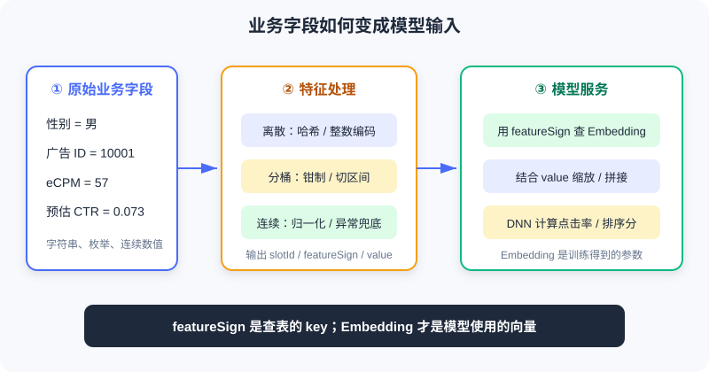
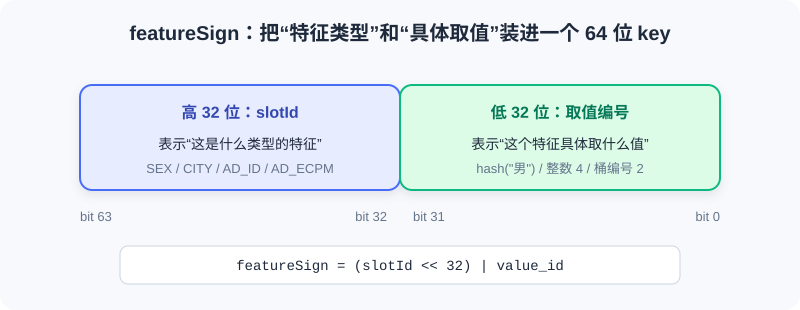
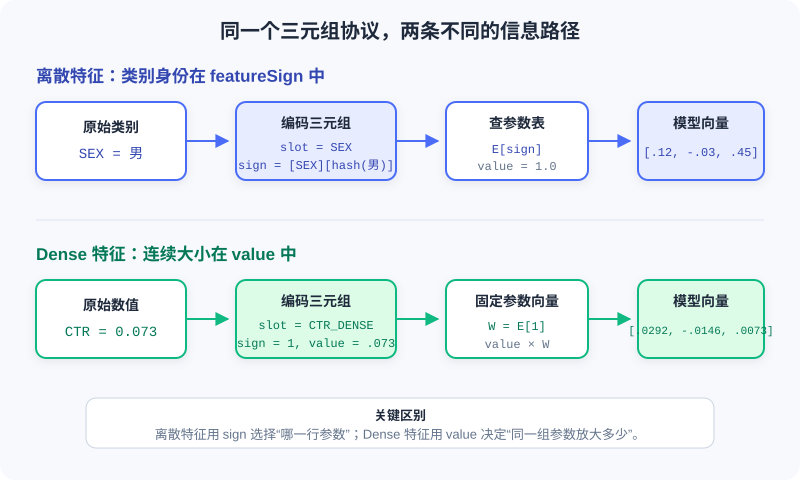

特征与 Embedding 入门
📝 Before You Continue: 请先读完 1.1 的用户—物品—场景三元组与 1.2 的技术地图。你需要会读基础 C++，并知道哈希函数能把字符串稳定映射为整数；不要求机器学习背景。
推荐系统最终处理的不是抽象的“用户兴趣”，而是一组具体字段：性别=男、城市=北京、广告ID=10001、预估点击率=0.073。业务代码认识这些字段，但神经网络只接受数字张量。两者之间缺少一座桥。
这座桥就是 特征处理。它把原始业务字段变成 slotId + featureSign + value，再由模型服务把无语义的编号查成可学习的 Embedding 向量。这条链路看似只是数据格式转换，却决定了模型能看见什么、怎样泛化，以及训练与线上是否一致。
1.3.0 从业务字段到模型输入
一个排序请求通常同时包含四类信息：
| 类别 | 典型字段 | 回答的问题 |
|---|---|---|
| 用户信息 | 用户 ID、性别、年龄、城市 | 这个人是谁？长期偏好是什么？ |
| 物品信息 | 广告 ID、视频 ID、类目、作者 | 当前候选是什么？ |
| 上下文信息 | 时间、网络、设备、候选位置 | 这次请求发生在什么场景？ |
| 连续数值 | 预估 CTR、eCPM、质量分、时长 | 某个信号具体有多强？ |
这些可被模型利用的信息统称为 特征（Feature）。但原始值不能原样送进模型：字符串无法参加矩阵乘法；业务 ID 的数字大小没有语义；不同连续值的量纲又可能相差数十亿倍。

上图给出了完整职责边界：业务服务负责特征生成，模型服务负责查 Embedding、组合特征并完成网络计算。二者通过稳定的特征协议连接。
💡 Key Insight: 特征处理不是“把东西变成数字”这么简单。它要同时保留类别身份、数值大小和工程稳定性，并确保离线训练与在线预测看到的是同一种表达。
1.3.1 三元组：slotId / featureSign / value
工业系统常把一条特征整理为如下记录：
struct FeatureInfo {
int slotId; // 特征属于哪个字段或特征组
int64_t featureSign; // 具体取值的查表 key
float value; // 数值或权重
};
三个字段各管一件事：
| 字段 | 含义 | 图书馆类比 |
|---|---|---|
slotId | 这是什么类型的特征 | 哪个书架 |
featureSign | 这个具体取值的编号 | 书架上哪本书的索引号 |
value | 这次使用它的数值或权重 | 这本书本次被使用的强度 |
例如，用户性别为“男”时，可以表达为：
FeatureInfo sex_feature{
.slotId = SEX,
.featureSign = gen_feasign_string(SEX, "男"),
.value = 1.0F
};
它可以读成：“去 SEX 书架，找到‘男’这个取值对应的条目，本次权重为 1.0。”
连续特征的分工不同。若预估点击率为 0.073：
FeatureInfo ctr_feature{
.slotId = AD_ETR_DENSE,
.featureSign = 1,
.value = 0.073F
};
这里 featureSign=1 只是固定占位，真实信息放在 value 中。先记住这个对照：
| 特征表达 | featureSign 放什么 | value 放什么 | 信息主要在哪里 |
|---|---|---|---|
| 离散 / 分桶 | 类别或桶的编号 | 通常为 1.0 | featureSign |
| Dense 连续 | 固定 key，常用 1 | 归一化后的真实数值 | value |
⚠️ Warning:
featureSign应被视为不透明的 64 位 key。若用uint64_t生成、再存入int64_t，最高位为 1 时在常见二进制补码实现中会显示为负数。只要下游按相同位模式查表通常没有问题，但不要对它做大小比较、abs()或带符号取模。
1.3.2 featureSign 如何生成
一种常见设计，是把 slotId 放进高 32 位，把具体取值的编号放进低 32 位：

这样，即使两个字段的低位编号碰巧相同，只要 slotId 不同，最终 key 仍然不同。
字符串取值：先哈希，再拼接
static uint64_t gen_feasign_string(
uint64_t slot_id,
const std::string& value) {
const uint32_t value_hash = gen_hash_new(value.data(), value.size());
const uint64_t slot_bits = (slot_id << 32) & 0xffffffff00000000ULL;
return slot_bits | value_hash;
}
这段代码分三步：
gen_hash_new把字符串稳定映射为 32 位整数。slot_id << 32把特征类型移到高 32 位。- 按位或
|把高位类型与低位取值合成一个 key。
例如 SEX=男 与 AGE_BUCKET=20 的低位哈希即使都等于 111，最终 key 仍分别是 [SEX][111] 与 [AGE_BUCKET][111]。Slot 分段把不同字段隔离开了。
💡 Key Insight:
featureSign像“班级号 + 学号”。学号只在班级内部区分学生；高位的班级号让不同班级的相同学号不冲突。
整数取值：能直接编码就不要哈希
如果取值本来就是小整数，例如网络类型 4、星期 2 或桶编号 7，可以直接放进低 32 位：
static uint64_t gen_feasign_int32(
uint64_t slot_id,
uint32_t value) {
const uint64_t slot_bits = (slot_id << 32) & 0xffffffff00000000ULL;
return slot_bits | value;
}
只要取值能被 32 位无符号整数完整表示，这种编码没有额外的哈希冲突。因此，小枚举和桶编号应优先使用整数版本。
哈希冲突是取舍，不是异常
字符串被压进 32 位空间后，冲突无法避免。低 32 位只有 个位置；根据生日悖论，一个 slot 内约有 7.7 万个不同取值 时，出现至少一次冲突的概率就超过 50%。
| Slot 示例 | 基数数量级 | 冲突影响 |
|---|---|---|
SEX | 几乎可忽略 | |
CITY | 通常可忽略 | |
AD_ID | 会出现少量冲突 | |
GUID | 大量冲突不可避免 |
两个不同取值发生冲突后，会共享同一条 Embedding，模型无法再区分它们。为什么工业系统仍常用这种 Feature Hashing ？因为它换来了无状态、可扩展的特征生成：不需要维护巨大的字符串词表，新取值也能立即得到 key。
Analysis:
- 收益： 无需中心词表，新增取值天然可处理，线上服务可水平扩展。
- 代价： 少量语义混淆，无法从 key 反查原值，高基数特征更难调试。
- 缓解： 增大哈希空间、使用双哈希、过滤低频值，或为关键高基数 slot 维护独立词表。
1.3.3 为什么需要 Embedding
这是本章最容易混淆、也最关键的一点：
💡 Key Insight:
featureSign是查 Embedding 的 key，不是 Embedding 本身。 它负责稳定地指出“是哪一个类别”，但不负责表达这个类别与其他类别的关系。
二者的区别如下：
| 对象 | 示例 | 是否训练 | 本质 |
|---|---|---|---|
featureSign | 500111 | 否 | 稳定、离散的索引 key |
| Embedding | [0.12, -0.03, 0.88, 0.21] | 是 | 模型从数据中学习的向量参数 |
| Embedding Table | key → vector | 是 | 按 key 保存和更新向量的参数表 |
从 One-Hot 到 Embedding
假设 CITY 只有“北京、上海、深圳”三个取值。最直接的编码是 One-Hot：
北京 -> [1, 0, 0]
上海 -> [0, 1, 0]
深圳 -> [0, 0, 1]
One-Hot 有两个性质：第一，它不会错误地制造大小关系；第二，不同类别彼此等距。但当广告 ID 有 1000 万种取值时，一个样本需要逻辑上占据 1000 万维空间，而且向量中只有一个位置为 1。直接把这种超高维稀疏向量送进网络，参数量和计算量都难以接受。
Embedding 层可以看成一个大矩阵 。One-Hot 向量乘以矩阵，本质上就是从 中选择一行：
因此工程上不必真的构造 One-Hot。只需传入类别对应的 featureSign，直接查出 。这既节省计算，又让模型能通过训练把行为相似的类别拉到相近的向量区域。
为什么不能直接把 featureSign 当 Embedding
假设有三个广告：
运动鞋广告 -> featureSign = 105
篮球广告 -> featureSign = 980001
婴儿奶粉 -> featureSign = 106
若直接把 sign 当成一个标量输入，模型会得到荒谬的几何关系：运动鞋 105 与奶粉 106 的距离只有 1，而与语义更接近的篮球 980001 相距近百万。这个距离完全由编号或哈希偶然决定，不代表用户行为相似度。
直接使用 sign 还有四个问题：
- 虚假的顺序关系。
500222 > 500111不代表某个类别“更大”或“更好”。 - 虚假的距离关系。 两个哈希值接近，不代表两个类别相似；相差很远也不代表不相似。
- 无法学习类别语义。 sign 是固定整数，不会在反向传播中朝“更像篮球”或“更像运动鞋”的方向移动。
- 数值精度风险。 64 位 sign 若转成
float32，超过 后很多相邻整数无法被精确区分，不同 key 可能被舍入成同一个浮点数。
Embedding 则为每个 key 提供一组 可训练参数。若观看篮球内容的用户经常点击运动鞋广告，训练会让这两个类别的向量逐渐靠近；奶粉广告的向量则可能位于另一片区域。类别之间的距离由数据学习，而不是由哈希值决定。
⚠️ Warning: “把 sign 转成 8 维二进制、十进制拆位或做归一化”仍然不是 Embedding。这些操作只是以另一种方式暴露任意编号，不能产生可学习的类别语义。正确做法是把 sign 当索引，查询独立的可训练向量。
一次完整的查表过程
假设 SEX=男 生成 featureSign=500111，Embedding 表当前保存：
E[500111] = [ 0.12, -0.03, 0.45]
E[500222] = [-0.21, 0.34, 0.08]
前向传播时，模型用 500111 查出第一行 [0.12, -0.03, 0.45]。若本次预测误差反向传播到这个特征，只更新 E[500111] 及相关网络参数，而不会把整数 500111 改掉。
这说明两者职责严格分离：
featureSign：稳定定位参数，训练前后保持不变
Embedding：承载可学习语义，会随训练持续更新
同一取值为什么共用一条 Embedding
两个用户都具有 SEX=男，就会生成相同的 featureSign，进而查询同一条 Embedding。这不会让两个用户变得无法区分，因为模型看到的是多个 slot 的组合：
| 用户 | 性别 | 年龄桶 | 城市 | GUID |
|---|---|---|---|---|
| A | 男 | 20–24 | 北京 | abc |
| B | 男 | 35–39 | 深圳 | xyz |
共享反而带来泛化能力：所有男性用户的样本共同更新“男性”这条参数，而年龄、城市、身份等其他特征继续保留个体差异。
Embedding 维度由谁决定
维度不由 C++ 特征生成代码决定，而由模型配置决定，通常按 slot 或特征组设置：
| Slot | 可能的基数 | 常见维度思路 |
|---|---|---|
SEX | 3 | 2–4 维通常足够 |
CITY | 可从 8 维起试 | |
AD_ID | 常在 8–32 维间权衡 | |
GUID | 维度乘基数会形成内存黑洞，需谨慎 |
维度越大，表示能力越强，但内存、通信和计算成本也越高；数据不足时还更容易过拟合。它是模型容量与系统成本之间的超参数，而不是“基数越大就无限加维度”。
1.3.4 离散特征与 Dense 特征如何编码
离散与 Dense 都可以装进 slotId + featureSign + value，但两条路径中“真正承载信息的字段”完全不同：

离散特征用 featureSign 选择“哪一行参数”；Dense 特征通常固定 sign，用 value 决定“同一组参数放大多少”。
| 对比项 | 离散特征（Sparse / Categorical） | Dense 特征（Continuous / Numerical） |
|---|---|---|
| 回答的问题 | 是哪一类？ | 具体是多少？ |
| 典型值 | 北京、男、广告 10001、网络类型 4 | CTR 0.073、时长 3600 秒、金额 57 元 |
| 算术关系 | 通常没有大小和距离意义 | 加减、大小和差值通常有意义 |
| 信息位置 | featureSign | value |
| 常见模型处理 | 按 sign 查 Embedding | 直接输入或投影为向量 |
离散特征：编码“是哪一个类别”
离散特征 的取值来自有限或可枚举集合。它们的数字形式只是身份，不应被解释为连续大小。例如网络类型 4 并不意味着它是网络类型 2 的两倍；广告 ID 10002 也不比 10001 更优。
一条离散特征通常经过五步：
- 规范化原始值。 统一编码、大小写、空格和缺失值，例如把空城市映射为
__UNKNOWN__。 - 选择 slot。
CITY、SEX、AD_ID各有独立的slotId。 - 生成 sign。 字符串先哈希，小整数可直接编码到低 32 位。
- 设置权重。 单值类别通常令
value=1.0。 - 查 Embedding。 模型用 sign 选择参数表中的一行。
例 1：字符串类别 SEX=男
假设 SEX 的 slotId=12，并假设 hash("男")=0x3A91F20B，那么：
高 32 位：slotId = 12 -> 0x0000000C00000000
低 32 位：hash("男") -> 0x000000003A91F20B
最终 sign -> 0x0000000C3A91F20B
业务服务生成：
const std::string normalized_sex = user.sex.empty()
? "__UNKNOWN__"
: user.sex;
features.emplace_back(
SEX,
gen_feasign_string(SEX, normalized_sex),
1.0F);
模型侧的处理可写成：
embedding = E_SEX[0x0000000C3A91F20B]
= [0.12, -0.03, 0.45]
output = 1.0 × embedding
= [0.12, -0.03, 0.45]
这里 value=1.0 只表示“该类别本次出现”。真正区分男、女、未知的是不同的 sign，以及它们各自对应的 Embedding。
例 2：整数枚举 APN_TYPE=4
网络类型本来就是小整数，无需先转字符串再哈希：
features.emplace_back(
APN_TYPE,
gen_feasign_int32(APN_TYPE, 4),
1.0F);
它会生成 [APN_TYPE][4]。与字符串版本相比，这种方式更直观，也不会引入额外的 32 位哈希冲突。
多值离散特征如何处理
“用户兴趣标签”可能同时包含 篮球、跑步、摄影。这时一个 slot 会产生多条 sign：
[INTEREST][hash(篮球)] value=1.0
[INTEREST][hash(跑步)] value=1.0
[INTEREST][hash(摄影)] value=1.0
模型查出三条 Embedding 后，通常做 sum、mean、加权池化或注意力聚合。若标签数量变化很大，mean 可以避免“标签越多，向量范数越大”的偏差；若不同标签重要性不同，可以把业务权重放进 value。
Analysis:
- 优点： 不制造虚假顺序，参数可按类别独立学习，也能通过向量空间共享行为模式。
- 成本： 高基数 slot 会产生大表；低频类别的向量训练不足。
- 关键检查： 同一业务值在离线与在线必须得到完全相同的 sign。
Dense 特征：编码“具体数值是多少”
Dense 特征 是有连续大小意义的数值。CTR=0.08 确实比 CTR=0.02 大，播放 100 秒也通常比播放 10 秒更长。编码时应保留这种数值关系，而不是为每个小数创建一条独立 Embedding。
Dense 特征在不同框架里有两种常见实现：
- 直接标量输入。 把归一化后的 与其他向量拼接，再送入 MLP。
- 统一 slot 协议。 使用固定
featureSign=1查一条参数向量 ，输出 。
本章工程采用第二种。它在数学上等价于把一维标量通过无偏置线性层投影到 维：
一条 Dense 特征通常经过四步：
- 校验与兜底。 处理缺失、
NaN、inf和非法负值。 - 变换与归一化。 根据分布选择直接使用、
log1p、Min-Max、Z-Score 或分位变换。 - 固定 sign。 该 slot 统一使用
featureSign=1，表示只需一组投影参数。 - 把数值放入 value。
value=x，模型计算x × E[1]。
例 1：已经归一化的 CTR=0.073
CTR 本身位于 ，可以先直接使用：
double ctr = ad.estimated_ctr;
if (!std::isfinite(ctr)) ctr = 0.0;
ctr = std::clamp(ctr, 0.0, 1.0);
features.emplace_back(
AD_ETR_DENSE,
1,
static_cast<float>(ctr));
假设这个 slot 的固定参数向量为：
W = E_AD_ETR_DENSE[1] = [0.40, -0.20, 0.10]
那么该样本送给上层网络的向量为：
0.073 × W = [0.0292, -0.0146, 0.0073]
另一个样本若 CTR=0.20，仍查同一条 ，但输出变为 [0.08, -0.04, 0.02]。因此 Dense 路径保留了“0.20 比 0.073 大”的连续关系。
例 2：长尾播放时长 watch_seconds=3600
时长常呈长尾分布。直接把 3600 放进 value 会让它的量级远大于 CTR 等特征。可以先做 log1p：
double seconds = watch_seconds;
if (!std::isfinite(seconds) || seconds < 0.0) seconds = 0.0;
seconds = std::min(seconds, 86400.0); // 顶部截断为 24 小时
const float encoded = static_cast<float>(std::log1p(seconds));
features.emplace_back(WATCH_TIME_DENSE, 1, encoded);
3600 秒被压缩为约 8.19，既保留“更长”的单调关系，也降低极端值对梯度和其他特征的支配。
📝 Note: Dense slot 中的
E[1]有时也被口头称为“Embedding”，但它与离散类别 Embedding 的角色不同。离散 Embedding 是“每个类别一行”；Dense slot 只有固定的一行，本质上是一组可学习的投影权重。
⚠️ Warning: Dense 特征不能不加检查地塞进
value。时间戳、金额、次数等大量级值会淹没其他特征并放大梯度。必须先做量纲压缩与异常值处理。
常见处理方式：
| 方法 | 形式 | 适用场景 |
|---|---|---|
log1p | 长尾正值：次数、时长、金额、eCPM | |
| Min-Max | 取值范围稳定且已知 | |
| Z-Score | 近似正态分布 | |
| 分位归一化 | 映射到经验 CDF | 分布不规则、离群值多 |
| 直接使用 | 不变 | 本身已在 ，如概率值 |
无论采用哪种方式，都要明确 NaN、inf、缺失值和异常负值的兜底规则。min/max/\mu/\sigma、分位点和截断阈值也必须在离线训练与在线服务之间共享。
Bucket：落在哪个区间
分桶特征 先把连续值切成区间，再把桶编号当类别：
static uint32_t cut_bucket(double value, uint32_t width) {
return static_cast<uint32_t>(value / width);
}
若 eCPM=57、桶宽为 20，则桶编号为 2。最终表达为 [AD_ECPM][2]，value=1.0。
这不是 dense 特征。它表达的是“落在哪个区间”，每个桶都有独立 Embedding，因此可以学习非单调的区间效应。
原始 cut_bucket 仍有三个工程陷阱：
- 负值： 内的值截断后可能悄悄落到 0 桶；更小的负值转无符号整数时可能超出可表示范围，不能依赖其结果。
NaN/inf： 转整数没有可用语义，可能触发未定义行为。- 桶宽为 0： 除零后结果无效。
更安全的实现应先校验参数、钳制异常值，并设置顶桶：
#include <algorithm>
#include <cmath>
#include <cstdint>
#include <stdexcept>
uint32_t safe_cut_bucket(
double value,
double width,
uint32_t max_bucket) {
if (!std::isfinite(width) || width <= 0.0) {
throw std::invalid_argument("bucket width must be positive");
}
if (!std::isfinite(value) || value < 0.0) {
value = 0.0; // ← KEY LINE: 异常输入统一兜底
}
const double raw_bucket = std::floor(value / width);
const double capped = std::min(raw_bucket,
static_cast<double>(max_bucket));
return static_cast<uint32_t>(capped);
}
Analysis:
- 等宽分桶： 实现简单，但长尾分布常让大多数样本挤在前几个桶。
- 等频分桶： 每桶样本更均衡，但依赖稳定的分位点统计。
- 对数分桶： 适合跨多个数量级的正值，能兼顾头部与长尾。
- 顶桶截断： 防止极端值制造大量只出现一两次的稀疏桶。
分桶与 Dense 为什么常同时使用
| 维度 | 分桶离散 | Dense 连续 |
|---|---|---|
featureSign | 桶编号 | 固定 key |
value | 1.0 | 真实归一化值 |
| 参数条数 | 每桶一条 | 整个 slot 一条 |
| 擅长 | 非线性、区间效应 | 精确大小、连续变化 |
| 局限 | 桶内无分辨力，边界不连续 | 单个线性缩放难表示复杂非单调关系 |
两者并用不是无意义重复。分桶告诉模型“处在哪个区间”，dense 告诉模型“准确是多少”。它们从不同角度表达同一个业务量。
1.3.5 Embedding 表与工程边界
表大小由唯一取值数决定
Embedding 表的主体内存可以粗略估算为：
其中 是该 slot 的唯一 featureSign 数， 是 Embedding 维度。实际系统还要计算哈希表元数据、key、指针和优化器状态；Adam 等优化器还可能额外保存一到两组同尺寸状态。
表大小不直接取决于请求量。十亿用户都只有三种性别时，SEX slot 仍只需要少量条目；但 GUID 本身接近“一用户一取值”，它的规模就会随用户增长。
准入、淘汰与 OOV
高基数 slot 会持续产生新 key，生产系统必须限制表增长：
| 机制 | 典型策略 | 解决的问题 |
|---|---|---|
| 准入 | 出现次数达到阈值后才建表项 | 过滤一次性噪声与超长尾取值 |
| 淘汰 | 连续若干天未出现则删除 | 清理失活用户、下线广告 |
| OOV | 零向量、默认桶或延迟建表 | 处理表中尚不存在的新 key |
“查询不到 key 时会发生什么”必须在加新特征前确认。若下游默认“随机初始化并立即写入”，一个高基数特征可能在短时间内撑大参数表；若返回零向量，则冷启动阶段该特征没有贡献，需要依赖其他可泛化特征。
Embedding 如何训练
Embedding 是推荐模型的一部分，与上层网络联合训练：
- 前向传播根据
featureSign查询向量。 - 多个向量与 dense 特征拼接或池化。
- DNN 输出点击率、转化率或排序分。
- 预测误差反向传播，同时更新 Embedding 与网络参数。
只有被训练样本覆盖到的 key 才能得到有效更新。只出现一两次的长尾特征，其向量接近随机初始值，既占内存又可能引入噪声——这正是频次准入存在的原因。
离线与在线一致性
这是特征工程中最隐蔽、也最常见的事故来源。训练样本与线上请求必须严格对齐：
- 哈希算法、种子和字符串编码；
slotId枚举值及候选位置偏移；- 分桶边界、桶宽与顶桶；
- 归一化统计量；
- 缺失值、异常值和大小写规则；
- 字符串
trim、拼接顺序和分隔符。
这类错误往往不会崩溃。服务仍能返回分数，监控也可能全绿，只是模型查到了“错误但合法”的参数，导致线上效果悄悄下降。
⚡ Pro Tip: 把改哈希、改 slot、改桶边界视为“换模型”，而不是普通代码热更新。优先让离线与在线共用同一份特征库；上线前抽取真实请求，逐字段对比两侧生成的三元组。
1.3.6 完整案例：给广告增加一个 eCPM 特征
假设业务已有 ad.ecpm，我们希望同时保留它的精确大小与非线性区间效应。合理做法是创建两个不同的 slot：
#include <algorithm>
#include <cmath>
#include <cstdint>
#include <vector>
struct FeatureInfo {
uint32_t slot_id;
uint64_t feature_sign;
float value;
};
enum Slot : uint32_t {
AD_ECPM_BUCKET = 101,
AD_ECPM_DENSE = 102
};
uint64_t make_int_sign(uint32_t slot_id, uint32_t value_id) {
return (static_cast<uint64_t>(slot_id) << 32) | value_id;
}
uint32_t safe_bucket(double value,
double width,
uint32_t max_bucket) {
if (!std::isfinite(value) || value < 0.0) value = 0.0;
if (!std::isfinite(width) || width <= 0.0) return 0;
const double bucket = std::floor(value / width);
return static_cast<uint32_t>(
std::min(bucket, static_cast<double>(max_bucket)));
}
void append_ecpm_features(double raw_ecpm,
std::vector<FeatureInfo>& output) {
const double clean_ecpm =
(!std::isfinite(raw_ecpm) || raw_ecpm < 0.0) ? 0.0 : raw_ecpm;
const uint32_t bucket = safe_bucket(clean_ecpm, 20.0, 100);
output.push_back({
AD_ECPM_BUCKET,
make_int_sign(AD_ECPM_BUCKET, bucket),
1.0F
});
const float dense_value =
static_cast<float>(std::log1p(clean_ecpm));
output.push_back({
AD_ECPM_DENSE,
1,
dense_value
});
}
输入 raw_ecpm=57 时，两条特征分别表达：
| Slot | featureSign | value | 模型获得的信息 |
|---|---|---|---|
AD_ECPM_BUCKET | [slot][2] | 1.0 | eCPM 落在第 2 桶 |
AD_ECPM_DENSE | 1 | log1p(57) | 经压缩后的精确大小 |
Analysis:
- 表达力： 分桶捕捉非线性，dense 保留连续变化，两者互补。
- 参数成本： 分桶 slot 最多 101 条参数；dense slot 只有一条向量。
- 一致性要求： 离线侧必须使用同样的桶宽、顶桶、
log1p与异常兜底。- 上线检查： 对正常值、负值、
NaN、极大值分别做三元组快照测试。
新增真实特征时，可以按下面清单逐项确认：
- 它是类别、连续值，还是需要“分桶 + dense”双表达？
-
字符串的编码、大小写、
trim与拼接规则是否固定？ - 小整数是否可以直接编码，避免不必要的哈希？
- Dense 值的量级、归一化和异常兜底是否明确？
- 分桶应使用等宽、等频还是对数边界？是否设置顶桶？
- 唯一取值规模与 Embedding 内存能否接受？
- 高基数 slot 是否受准入和淘汰规则约束？
- OOV 时模型服务返回什么？
- 离线训练与在线服务是否复用相同逻辑和配置？
- 上线前是否完成逐字段一致性对比？
⚠️ Common Mistakes in 1.3
| # | Mistake | Example | Why It's Wrong | Fix |
|---|---|---|---|---|
| 1 | 把 featureSign 当 Embedding | “把哈希值转成浮点数直接喂给 DNN” | 编号制造虚假顺序与距离，64 位整数转 float32 还会丢失 key 精度 | 用 sign 查独立、可训练的向量 |
| 2 | 认为哈希不会冲突 | 高基数 GUID 使用 32 位哈希却不监控 | 不同取值会共享参数 | 估算基数与冲突，必要时扩位或过滤 |
| 3 | Dense 原值直接入模 | 时间戳写入 value | 量级过大，淹没其他特征并放大梯度 | 归一化、钳制并统一统计量 |
| 4 | 分桶前不校验 | 对负值、NaN、inf 直接转 uint32_t | 产生错误桶或不可依赖的行为 | 检查有限性、非负性与桶宽 |
| 5 | 不设置顶桶 | 极端值持续制造新桶 | 参数稀疏且表规模失控 | min(bucket, MAX_BUCKET) |
| 6 | 在线离线各写一套逻辑 | Python 与 C++ 桶边界不同 | 查到错误但合法的 Embedding，难以报警 | 共用库/配置并做特征 diff |
| 7 | 忽略 OOV 行为 | 新 key 自动写表却没有准入 | 高基数特征迅速撑大内存 | 上线前确认 OOV、准入与淘汰 |
| 8 | 对有符号 sign 做算术 | 对负数 featureSign 调 abs() 分片 | 改变位模式或触发边界问题 | 按无符号 key/字节串处理 |
本章小结
📌 Key Takeaways
| Concept | Key Points | Why It Matters |
|---|---|---|
| 特征三元组 | slotId 管类型，featureSign 管取值，value 管数值/权重 | 是业务服务与模型服务的协议 |
| Feature Hashing | 字符串稳定映射到有限 key 空间，冲突不可避免 | 换来无词表、可扩展的在线处理 |
| Embedding | sign 只负责索引；Embedding 是按监督信号训练的向量 | 让类别关系由数据学习，而不是由哈希编号决定 |
| Sparse | 规范化类别 → 生成 sign → value=1.0 → 查独立向量 | 表达“是哪一类”，不制造虚假大小关系 |
| Dense | 校验/变换数值 → 固定 sign → 数值写入 value → 投影 | 保留“具体是多少”及连续变化 |
| 分桶 | 连续值先切区间，再作为类别查表 | 捕捉非线性区间效应 |
| 表规模 | 由唯一 key 数 × 维度决定 | 高基数特征必须考虑内存治理 |
| 工程一致性 | 哈希、slot、桶、归一化、缺失值规则必须对齐 | 防止“服务正常但效果下降”的静默事故 |
❓ FAQ
Q1：为什么不能直接把 featureSign 当作 Embedding？
A：因为 sign 只是任意编号，数值大小和距离都没有业务语义，而且 64 位 sign 转成
float32还可能丢失精度。Embedding 是按 sign 查询的一组独立可训练参数，类别之间的相似性由点击、转化等数据学习，而不是由哈希值决定。
Q2：为什么 Dense 特征也需要一个 featureSign？
A：在统一的 slot 协议中，它仍需定位该 slot 的一组权重。固定 key 意味着所有样本共享这组参数，再由不同
value缩放。
Q3：一个连续值应该选分桶还是 Dense？
A：需要精确大小与连续变化时用 dense；关系明显非线性或需要区间效应时用分桶。重要特征常同时使用两种表达。
Q4：Embedding 表为什么不会随请求量线性增长？
A：重复出现的相同 sign 会复用同一条参数。它随“唯一取值数”增长；只有 GUID、广告 ID 等高基数 slot 才可能接近用户或物品规模。
Q5：改桶宽为什么通常需要重训模型？
A：桶宽改变后，同一个业务值会查到不同 key，对应的旧 Embedding 语义已经错位。规则变化必须与新模型一起发布。
🔗 Connections to Later Chapters
- Chapter 2.3 （双塔模型）会把用户与物品的多组 Embedding 聚合成两侧向量，再用于大规模检索。
- Chapter 3.1 （Wide & Deep）会把离散 Embedding 与连续特征送入 Deep 部分，建立排序模型的泛化能力。
- Chapter 3.2 （特征交叉）会进一步研究不同特征 Embedding 之间如何发生二阶与高阶交互。
- Chapter 6.4 （Codebook 量化与语义 ID）会展示另一种离散表示：让物品 ID 本身带上层次化语义。
- Part 11 （生成式推荐系统实战）会把离线特征生成、在线特征服务与模型部署串成完整工程链路。
Practice Problems
请按顺序完成。后面的题目会逐渐加入规模、异常值与一致性约束。
Problem 1.3.1 — 三元组分工 🟢 Easy
给定 CITY=北京 与 estimated_ctr=0.08，分别说明它们的关键信息应该放在 featureSign 还是 value 中。
💡 Suggested Answer (click to reveal)
Reasoning: 城市是类别，CTR 是连续数值，两者表达目标不同。
Answer: CITY=北京 的类别身份放在 featureSign，value 通常为 1.0；CTR 使用固定 sign，把 0.08 放在 value。
Key points:
- Sparse 回答“是哪一类”。
- Dense 回答“具体是多少”。
Problem 1.3.2 — 判断 key 与向量 🟢 Easy
假设 hash("男") = hash("20") = 111。SEX=男 与 AGE_BUCKET=20 是否会得到相同的 featureSign？又能否把最终 sign 直接当作模型向量？
💡 Suggested Answer (click to reveal)
Reasoning: 完整 key 由高 32 位 slot 与低 32 位取值编号共同构成；key 只负责定位参数，不表达类别语义。
Answer: 两个 sign 不相同，分别是 [SEX][111] 与 [AGE_BUCKET][111]，因为高位 slot 不同。二者都不能直接作为模型向量，必须在各自 slot 的参数表中查询可训练 Embedding。
Key points:
- Slot 隔离了不同字段。
- 哈希冲突只需在同一 slot 内讨论。
- sign 的数值距离没有业务意义，不能代替 Embedding。
Problem 1.3.3 — 选择表达方式 🟡 Medium
你要加入“近 30 天购买金额”，分布极度长尾，既希望保留金额大小，又怀疑不同消费区间存在非单调效应。请设计特征表达。
💡 Suggested Answer (click to reveal)
Reasoning: 单一表达无法同时兼顾连续精度与自由的区间效应。
Answer: 创建两个 slot：一个对金额做 log1p 后作为 dense；另一个使用对数分桶或离线等频边界作为 sparse 桶特征。两侧统一异常值、边界与顶桶配置。
Key points:
- Dense 保留连续大小。
- 分桶捕捉非线性。
- Check：离线和在线对同一金额应输出完全一致的三元组。
Problem 1.3.4 — 定位静默故障 🔴 Hard
新模型离线 AUC 正常，上线后服务无报错，但效果显著下降。排查发现离线 Python 使用 value.strip().lower() 后哈希，在线 C++ 直接对原字符串哈希。解释原因并设计修复与防复发方案。
💡 Suggested Answer (click to reveal)
Reasoning: 两侧对同一业务值生成了不同 key，因此线上查到的不是训练时更新过的参数。
Answer: 统一字符串规范化和哈希实现，重建训练样本并重训模型；上线前用同一批真实请求分别执行离线与在线特征逻辑，逐字段 diff slotId/featureSign/value。把规范化规则与哈希种子放在共享库或同一份版本化配置中。
Key points:
- 这是特征错位，不是模型结构问题。
- 旧模型不能直接适配新 key。
- Check：一致性测试应覆盖空格、大小写、空值和非 ASCII 字符。
🏆 Challenge: 估算高基数特征的成本
某 AD_ID slot 有 5000 万个活跃 key，Embedding 维度为 16，使用 FP32。只计算向量本体需要多少内存？若训练时还保存两份同尺寸优化器状态，总量至少是多少？再说明实际部署为什么还会更大。
💡 Hint
先计算 字节，再乘以参数本体与优化器状态的份数。不要忘记哈希表 key、指针、对齐与装载因子。